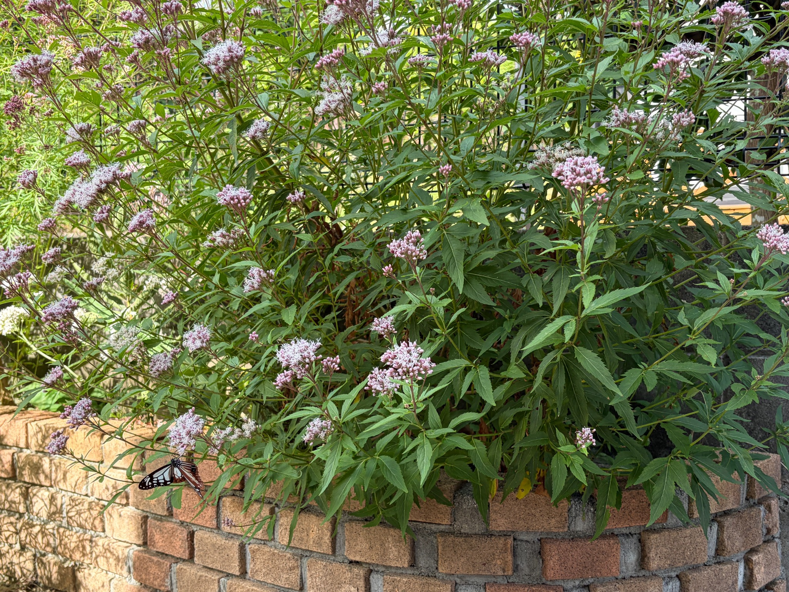
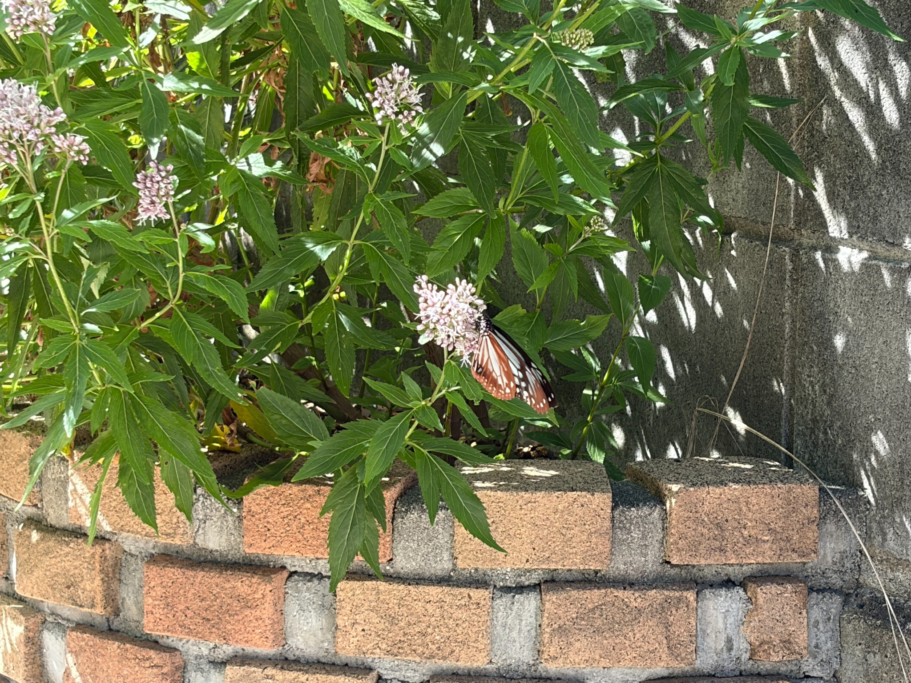
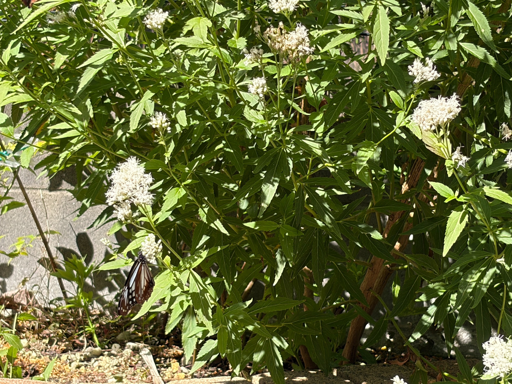
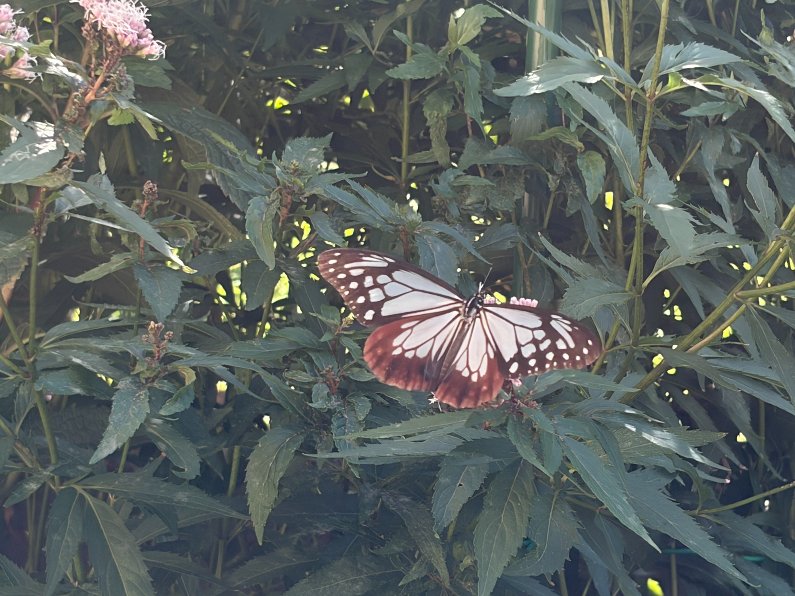

朝9：30頃、花を訪れるアサギマダラを確認
朝9：30頃、庭にアサギマダラが飛来しているのを確認しました。フジバカマの花にとまっている姿を見つけ、今回も写真に残しました。
この日は11：30頃まで滞在していました。姿を確認してから約2時間、花にとまって蜜を吸う様子を観察できました。私が気づく前から庭に来ていた可能性もあるので、正確な到着時刻は分かりませんが、朝の庭でゆっくり過ごす姿を見ることができました。
今回、特に目に留まったのは、吸蜜する花の選び方です。フジバカマ原種系と白フジバカマ原種系の両方を行き来して、蜜を吸っていました。
12日には、吸蜜の約9割が白フジバカマ原種系で見られました。それに対して、この日は両方の花を利用している様子が印象に残りました。花の咲き具合も変わってきているので、その変化と一緒に記録しておきたいと思います。
10月12日の初飛来から、庭で姿を見る日が続いています
わが家の庭に初めてアサギマダラが飛来したのは、10月12日でした。来てもらいたいと思いながらフジバカマを育て、花を訪れる蝶や虫を眺めてきたので、実際に姿を見つけたときは、とてもうれしく感じました。
12日は10：30頃に2匹が飛来しました。一方は大きく、翅に欠けがある個体で、1時間半ほど滞在。もう一方は小さく、翅がきれいな個体で、16：30まで約6時間にわたり滞在していました。
同じ頃に訪れた2匹でも、大きさや翅の状態、滞在時間に違いがあり、それぞれの姿をじっくり観察できました。特に、小さい個体が長い時間、花にとまって蜜を吸い続けていたことが心に残っています。
その後も13日、14日、15日と、毎日1～2匹の姿を確認しました。12日から16日までの5日間で、延べ8匹の飛来を記録しています。ただし、同じ個体が再び来ていたのか、それぞれ別の個体だったのかは分かりません。延べ8匹というのは、日ごとに確認した数を合計したものです。
そして16日も、こうして庭を訪れる姿を見ることができました。初飛来を喜ぶだけでなく、日によってどの花にとまり、どのように過ごしているのかにも、少しずつ目が向くようになってきました。
白フジバカマ原種系は満開、ほかのフジバカマも開花が進む
この日の花の咲き具合を、見た目の目安で整理すると、次のような状態でした。
- 白フジバカマ原種系：満開、開花100％
- フジバカマ原種系：開花60％ほど
- 羽衣：開花40％ほど
白フジバカマ原種系は、花が十分に開いた満開の状態です。一方、フジバカマ原種系は、開いた花と蕾が混在しながら、全体の6割ほどまで開花が進んでいました。羽衣は4割ほどで、まだこれから開く花も残っています。
同じ庭に植えていても、咲き進む速さには違いがあります。すでに満開になっている花がある一方で、これから開花が進む花もあり、庭全体では時期をずらしながら花を楽しめる状態になっています。
アサギマダラを見るときも、蝶だけを追うのではなく、どの花がどのくらい咲いているかを一緒に見ておくことが大切だと感じました。花の種類だけでなく、その日の咲き具合によっても、吸蜜する場所が変わるのかもしれません。
※開花率は、庭で見た咲き具合を私なりに表した目安です。
フジバカマ原種系と白フジバカマ原種系、両方の花で吸蜜
この日は、フジバカマ原種系と白フジバカマ原種系を行き来しながら、蜜を吸っていました。
淡いピンク色の花にとまる姿も、白い花にとまる姿も撮影できました。同じ庭の中で、異なる花を利用していることが、写真にも残せたと思います。



どちらか一方だけにとまっているのではなく、両方を行き来する様子を見ると、庭に咲くそれぞれの花が、吸蜜場所として利用されていることを実感します。
なお、この日は花ごとの吸蜜時間を細かく計っていないので、どちらで何割吸蜜していたかまでは分かりません。今回の記録では、「フジバカマ原種系と白フジバカマ原種系の両方で吸蜜し、行き来していた」という、実際に確認できた様子を残しておきたいと思います。
12日は白フジバカマ原種系で約9割。今回との違いを考える
12日の観察では、吸蜜の約9割が白フジバカマ原種系で見られました。この割合も厳密な時間計測ではなく、観察中の印象を含む目安ですが、白フジバカマ原種系を中心に長く吸蜜していたことは、はっきりと印象に残っています。
それに対して16日は、白フジバカマ原種系だけでなく、フジバカマ原種系にも移動して蜜を吸っていました。
この違いには、フジバカマ原種系の開花が進んできたことも関係しているのではないかと感じました。この日は6割ほどまで花が開いており、こちらにも吸蜜できる花が増えてきたように見えます。
ただ、今回の観察だけで、花の咲き具合が理由だと決めることはできません。訪れた個体が違う可能性もありますし、観察した時間帯も異なります。12日は10：30頃から、16日は9：30頃から姿を確認しているので、同じ条件で比べた記録ではありません。
また、開花100％と60％という数字は、それぞれの株で花がどのくらい咲いているかを表したものです。株の大きさや花房の数が違えば、開いている花の総数も変わります。満開だから必ず蜜が多い、開花率が低いから吸蜜場所として劣る、という単純な比較はできないと思います。
今のところ私が感じているのは、「白い花だけを好む」と考えるよりも、花の種類と咲き具合、その日に見られた行動を一緒に記録していく方が、庭での様子をよく理解できそうだということです。
12日は白フジバカマ原種系が吸蜜の中心で、16日は両方を行き来していました。この違いを一つの記録として残し、これからの観察と比べてみたいと思います。
ミツバチやアブ、小さなハナムグリも約50匹
フジバカマの花には、アサギマダラのほかにも、ミツバチ、アブ、小さなハナムグリが合わせて50匹ほど集まっていました。花で蜜を吸ったり、その周りを飛び回ったりして、庭はにぎやかな様子でした。
これほど多くの虫が訪れると、育ててきた花が、いろいろな虫に利用されていることを目の前で感じられます。アサギマダラを迎えたくて育て始めたフジバカマですが、その花を楽しみにしているのは、アサギマダラだけではないようです。
ほかの虫が多いことで、アサギマダラが吸蜜する場所を変えることもあるのだろうか、と考えました。ただ、今回の観察では、ほかの虫が原因で移動したとまでは確認できていません。
花から花へ移る理由には、花の状態や周囲の様子など、いろいろなことが関係しているのかもしれません。今後は、どの花で吸蜜していたかに加えて、近くにほかの虫がいたか、接近したときにどう動いたかにも目を向けてみたいと思います。
翅を広げた姿も、写真に残せました
今回は、花にとまって翅を閉じた姿だけでなく、大きく翅を広げた姿も撮影できました。
翅を閉じているときと、広げたときでは、見える模様や印象が変わります。広げた翅には淡い色の部分と濃い縁取りがよく見え、アサギマダラらしい美しさを改めて感じました。

写真を見返すと、花壇全体の中にいる姿、花に近づいて撮った姿、翅を広げた姿と、そのときには気づかなかった見え方の違いも楽しめます。蝶の姿と一緒に、周りの花の咲き具合まで残せることも、写真で記録するよさだと思いました。
花の変化と、アサギマダラの過ごし方を一緒に記録していきたい
この日は9：30頃から11：30頃まで、アサギマダラが庭で過ごす姿を確認できました。
12日に初めて訪れたときは、待っていた蝶に会えた喜びが何よりも大きかったのですが、観察を重ねるうちに、吸蜜する花の違いや、開花の進み具合にも関心が広がってきました。
満開の白フジバカマ原種系と、開花が6割ほどまで進んだフジバカマ原種系。その両方を行き来して蜜を吸う姿は、今回残しておきたい大切な記録です。
羽衣も4割ほどまで開花しています。これから花が咲き進んだときに、庭を訪れるアサギマダラがどの花を利用するのかも楽しみになりました。
一度の観察ですべてが分かるわけではありませんが、その日に見られたことを、花の状態とともに少しずつ残していきたいと思います。フジバカマを育て、花を訪れる蝶や虫を眺める楽しみが、また一つ増えた一日でした。